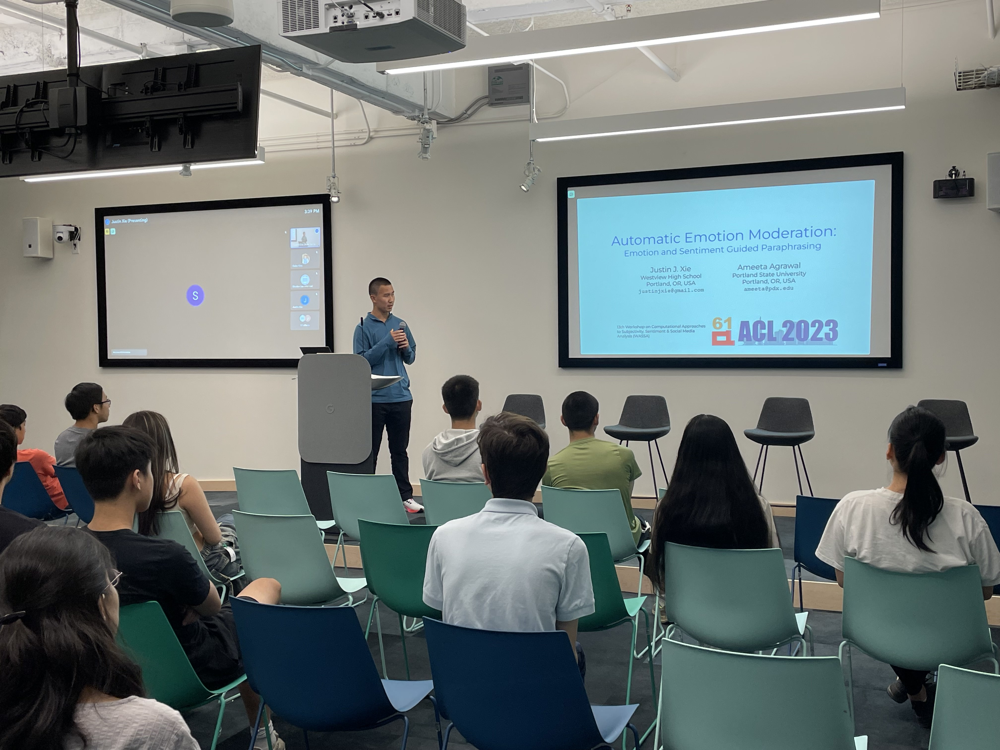
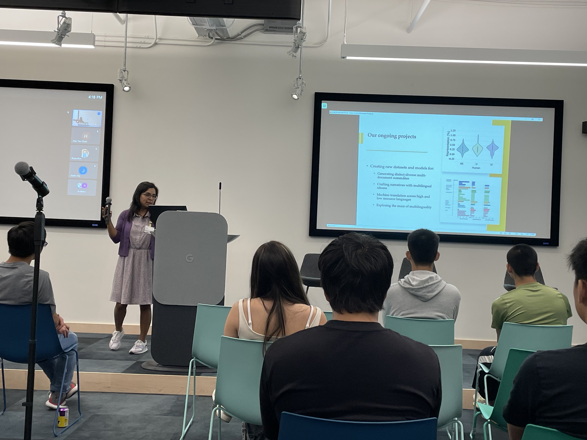

On August 10th, Youth For Empathetic AI hosted a hybrid outreach event at the Google PDX office. The main focus of the event was to hold in-depth discussions of various aspects of AI. Students and parents were invited to either attend in person or virtually. On-site attendees had the added perk of a brief tour of the Google office.

For this event, we aimed to connect AI researchers and engineers with high school students to help the students better understand the intricacies of the rapidly developing field of AI and how empathy and human connections might be incorporated into AI development. We invited researchers from Google Deepmind, Google Cloud, and Google Core, as well as PSU professors to discuss a variety of AI topics with the attending students:
- Empathy in AI: Considerations and Building Blocks
- How Can Creators Be Paid Fairly in the New GenAI Web?
- Generative AI for Speech: How We Use Them to Benefit Society
- AI for Content Safety
- How to Make Money With Linear Algebra
- Suresh Singh (PSU): A Variety of ML Applications
- Ameeta Agrawal (PSU): Multilingual Large Language Models
- Justin Xie (Westview High School): Automatic Emotion Moderation - Emotional Paraphrasing
Takeaways
All the presentations were extremely interesting as we learned about a variety of topics from Generative AI to what it means for AI to be empathetic. We would like to highlight 3 topics as they effectively represent some of the foundational pillars of our organization.
Empathy in AI: Considerations and Building Blocks
One of the core messages that our organization wants to spread is that we want a future with empathy as a key component of our AI systems.
We invited a researcher from Google Core Labs to give a presentation along this direction. In his talk, he covered the basics of what it might mean for AI to be empathetic and why we must develop empathetic AI systems. He drew these ideas from Hume AI, a company that focuses on developing AI systems that are “empathetic,” emotion-oriented, and personal. These ideas were also what inspired our organization’s co-founders in the creation of the organization and its name.
The presentation also explained how some state-of-the-art models are incorporating the idea of empathy by showing several prompts to Bard and Pi (a model focused on the Emotional Quotient or EQ). He then concluded by giving a short overview of what future empathetic AI systems might include and what considerations we have to make moving forward.
How Can Creators Be Paid Fairly in the New GenAI Web?
Another core message of our organization is fairness in AI. With the recent writer and actor strikes in Hollywood, an issue with the rise of Generative AI has come under a more intense level of scrutiny. As these AI systems become increasingly capable, creative minds such as writers, artists, and authors fear that they will be replaced.
We invited another researcher from Google Core to give a presentation covering some aspects of this ongoing conflict between man and machine. In his talk, he focused on the balance between creative ideas and the execution of those ideas. In the past, with there being a plethora of creative minds, ideas were easy to obtain, but the execution of those ideas (especially on a larger scale) was difficult. Now the power dynamic is shifting. With continual training, AI systems can optimize execution times at a shockingly high rate. However, because current AI systems are learning from data that was created by human minds, many of the ideas that Generative AI has are unoriginal or subpar compared to humans. This now makes ideas more valuable than execution.
This message gives us hope that the incorporation of Gen AI into the book, movie, and TV industries will not completely eradicate the need for writers, directors, actors, authors, and artists.
Multilingual Large Language Models
With the recent explosion of Large Language Models (LLMs), including ChatGPT, Bard, and LLaMa, we have seen the power that AI has in many areas of language from summarizing text to writing essays to creating Shakespearean imitations. However, most of us have only interacted with LLMs through high-resource languages. High-resource languages like English and Spanish are languages that have a lot of available data to train models on. This means that more commonly spoken and recorded languages will be better represented by LLMs. This also means that low-resource languages such as those spoken by Indigenous Peoples and Sub-Saharan Africans are poorly represented by LLMs.
Professor Ameeta Agrawal from Portland State University (PSU) is deeply passionate about increasing the diversity of languages represented in LLMs. In her presentation, she displayed the disparity between the amount of data available for a high-resource language (English) and a low-resource one (Kiswahili). She also presented some of the current research that her PortNLP lab at PSU is currently working on, including how to make multilingual systems with limited data. Lastly, she highlighted that any language needs people that speak it to also do research in NLP and computational linguistics. This is an extremely important point that reinforces the idea that diversity in developing future AI systems is important to be able to represent more and more languages, cultures, and communities.

Empathy, Fairness, and Diversity
Below, we would like to summarize the foundational pillars of our organization that were highlighted through the wonderful presentations:
- Empathy - We need AI systems to be developed to be more empathetic to create interactions that consider human emotions and show a deep level of understanding and caring that we as humans need.
- Fairness - Though the development of new and powerful AI tools is exciting, we have to continue to consider how to fairly implement these systems in a way that benefits a lot more people than it hurts.
- Diversity - We are a diverse planet full of amazing languages and cultures. However, a lack of diversity and representation in many communities has led to AI development leaving them in the dust. It is important for the field of AI research to welcome diverse worldviews to make new developments helpful to more and more people.
To Conclude…
We would like to thank all the speakers and attendees for attending on-site or virtually. We hope that through this event, we have not only connected AI experts with the youth, but also have spread a message about the importance of empathy, fairness, and diversity for future work in the field of AI. We also hope to host similar events in the future where we continue to spread a more human and empathetic message in a world where AI will only continue to grow.
Videos and Demonstration Links from Presentations